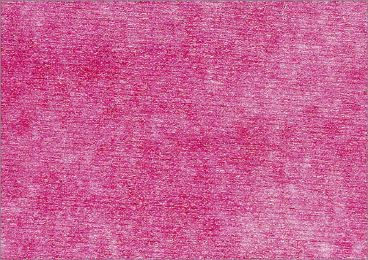
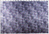
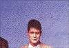
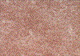

WOLKIGKEIT BZW. STRUKTUR IM BEDRUCKSTOFF
|
Unter diesem Fehler werden alle
Fehlererscheinungen mit wolkigem Ausdruck, die im
Zusammenhang mit einer vorhandenen Struktur im
Bedruckstoff stehen, zusammengefasst. Je nach
Erscheinungsbild der Wolkigkeit können auch
die Begriffe „grießiger Ausdruck“,
„speckiger Ausdruck“, „fleckiger
Ausdruck“, „streifiger Ausdruck“
genannt werden. Analog der im Bedruckstoff
vorhandenen Struktur penetriert die Druckfarbe
während und nach dem Druckvorgang
ungleichmäßig, was zu einem
ungleichmäßigen Erscheinungsbild des
Drucks führt. Dies macht sich in erster Linie
in Vollton- und Rasterflächen bemerkbar. Sehr
kritisch sind auch Hauttöne und
Rasterverläufe zu sehen. Die Fehlererscheinung
„wolkiger Ausdruck“ zählt zu den
variantenreichsten Problemen im Offsetdruck und
wirkt je nach Motiv stark verkaufsmindernd (Abb.
1).
|

|
Abb. 1: Wolkiger Ausdruck aufgrund einer
Saugwalzenmarkierung im Papier.
|
|
|
|
Mögliche Ursachen:
|
|

|
|
Abb. 2: Gesamtansicht des beanstandeten
Druckbogens.
|
|
|
|

|
|
Abb. 3: Erkennbare systematische Struktur im
Auflagendruck.
|
|
|
|

|
|
Abb. 4: Aufnahme vom Wischtest des
Auflagenpapiers mit Saugwalzenmarkierung.
|
|
|
|

|
|
|
|
|
|

|
|
|
|
|
|

|
|
|
|
|
|

|
|
|
|
|
|

|
|
|
|
|
|
|
Papierbedingte Ursachen:
Papiere mit einer stark wolkigen Formation oder mit einer
vorhandenen, störenden Struktur (Saugwalzenmarkierung,
Siebstruktur, Prägemarkierungen) sind in erster Linie
als Ursache für wolkigen Ausdruck zu nennen.
Entsprechend der Formation bzw. der Struktur schlägt
die Druckfarbe ungleichmäßig weg, was ein
wolkiges Erscheinungsbild zur Folge haben kann. Dies trifft
sowohl für ungestrichene Papiere als auch für
gestrichene Papiere zu. Bei gestrichenen Papieren wird der
Strich beim Kalandriervorgang entsprechend der partiellen
Dickenunterschiede im Streichrohpapier unterschiedlich stark
komprimiert. Daraus resultiert ein partiell
unterschiedliches Wegschlagverhalten und dementsprechend
ungleichmäßiger Ausdruck.
Kommen bei gestrichenen Papieren die o. g. Ursachen für
den wolkigen Ausdruck nicht infrage, können die unter
den Kapiteln: „mottling“,
„Strichaufbauen“ oder „Abstoßen der
Druckfarbe“ genannten papierbedingten Ursachen
vorliegen. Es gelten dann auch die entsprechenden
Abhilfemaßnahmen.
Drucktechnische Ursachen:
Drucktechnische Ursachen können eine fehlerhafte
Zurichtung oder fehlerhafte Spannung des Drucktuches sein.
Seltener treten Benetzungsstörungen des Drucktuches
auf, die zu wolkigem Ausdruck führen können.
Zu geringe Druckbeistellung kann in gewissem Maße
wolkigen Ausdruck hervorrufen.
Schlieren im Filmkleber bei konventioneller Bogenmontage
oder Fehler bei der konventionellen Druckplattenbelichtung
können ebenfalls als Ursache für wolkigen Ausdruck
genannt werden. In diesen Fällen bleibt die Wolkigkeit
von Bogen zu Bogen im Erscheinungsbild entsprechend der
Vorlagen gleich.
Wenn die Reprofilme der Einzelfarben nicht mit den
empfohlenen Rasterwinkelungen hergestellt werden, kann es zu
einem sog. Moiré kommen, das ebenfalls ein
ungleichmäßiges Aussehen von gerasterten
Flächen zur Folge hat.
|
Mögliche Abhilfen:
|
|
Bei papierbedingten Problemen:
Um das Druckpapier als Ursache eingrenzen zu können,
muss verglichen werden, ob das Erscheinungsbild des wolkigen
Ausdrucks mit der Papierstruktur korreliert. Dies kann im
Durchlicht bzw. bei Betrachtung der Papieroberfläche
unter UV-Licht geschehen. Durch einen einfachen Wischtest
lässt sich das Absorptionsverhalten der Druckfarbe auf
dem fraglichen Papier sichtbar machen. Dies ist letztendlich
der Beweis für eine papierbedingte Ursache. Bei rein
papierbedingtem wolkigen Ausdruck bleibt dann als
Problemlösung nur der Wechsel auf eine alternative
Papiersorte.
Bei drucktechnischen Problemen:
Kontrolle der:
- Aufzugsstärke des Drucktuchs.
- Zurichtung des Drucktuchs.
- Gleichmäßigkeit der Benetzung des
Drucktuchs.
- Druckplatten bzw. Filme bezüglich
Schlierenbildung.
- Rasterwinkelung der Reprofilme kontrollieren.
|
Beispiel(e):
|
|
Ungleichmäßiger Ausdruck bei einseitig
geprägtem Karton:
Für eine Verpackung wurde ein ungestrichener, einseitig
mit Leinenstruktur geprägter Karton eingesetzt. Bereits
nach dem Druck von drei Bogen zeigte sich dabei eine stark
ungleichmäßige Druckwiedergabe, ein deutlich
erkennbares Muster, das über die gesamte Fläche
des Druckbogens in diagonaler Richtung verlief (Abb. 2).
Nach Informationen aus der Druckerei war dies trotz
intensiver Druckbeistellung und höherer Farbgebung
nicht zu vermeiden.
Bei Laborprüfungen ließ der beanstandete Karton
in der Durchsicht eine normal wolkige Formation erkennen.
Das beschriebene diagonal verlaufende Muster wurde dabei
nicht festgestellt. Bei der Saugfähigkeitsprüfung
konnte der Effekt jedoch reproduziert werden. Die
Testfläche machte - wie beim Auflagendruck beobachtet -
ein partiell ungleichmäßiges Saugverhalten
deutlich.
Die Reklamation wurde vom Kartonhersteller anerkannt, der
für die Ursache folgende Erklärung abgab:
Die Kartonbahn wird beim Prägevorgang zwischen zwei
Walzen unter hohem Druck geführt. Eine Walze ist mit
einem Gewebe überzogen, die die Prägung (eine sog.
Wildprägung) erzeugt.
Bei der Gegenwalze handelt es sich um einen glatten
Stahlzylinder. Bei der Produktion dieses Kartons hatte sich
das auf der Prägewalze fixierte Gewebe gelöst und
führte zu einer diagonalen Verdrehung. Entsprechend
dieser Verdrehung wurde der Karton mit einer diagonalen
Struktur geprägt. Diese Struktur wurde letztendlich im
Druck wieder sichtbar und somit beanstandet.
Ungleichmäßiges Druckbild beim Druck auf
ungestrichenem Papier:
Für den Innenteil einer Broschur wurde ein
ungestrichenes, holzfreies Papier verwendet. Das Sujet
bestand aus Text, kleinen Vierfarb-Abbildungen und
großen blau-violetten Rasterflächen. Der Kunde
beanstandete die gesamte Auflage wegen einer unzureichenden
Wiedergabe der Rasterflächen, die vor allem auf einer
Seite deutlich wurde (Abb. 3). Die Art der Beanstandung
wurde vom Kunden als „Moiré“ bezeichnet.
Eine reprotechnische Überprüfung der Filme ergab
jedoch, dass diese mit der richtigen Rasterwinkelung
produziert wurden und daher eine Moirébildung als
Ursache auszuschließen ist.
Bei der Untersuchung der Saugfähigkeit des
Auflagenpapiers mit dem sog. Wischtest zeigte sich sehr
deutlich eine Struktur auf der Testfläche, die mit der
Struktur des Auflagendrucks übereinstimmte (Abb. 4).
Mit diesem Test wurde also deutlich, dass die Ursache des
beanstandeten Druckausfalls eindeutig mit einem
ungünstigen Saugverhalten des Papiers in Verbindung zu
bringen ist. Bei der Struktur im Papier handelte es sich
nach Angaben des Papierherstellers um eine
Saugwalzenmarkierung.
|
Allgemeine Hinweise:
|
|
Für den Reklamationsfall:
20 Blatt des unbedruckten Auflagenpapiers (DIN A4) und evtl.
des Vergleichspapiers sicherstellen.
Drucktechnische Angaben ermitteln (Farbreihenfolge,
Druckfarben, Feuchtmittel...).
Reklamierte Muster sicherstellen.
Ergänzende Literatur:
FALTER, K.-A.; SCHMITT, U.:
Ermittlung des wolkigen Ausdrucks von Vollton- und
Rasterflächen im Offsetdruck.
München: FOGRA, 1986 (3.244). - Forschungsbericht
|
|
|
|
|
|
|
Kontakt:
boehm@fogra.org
|
Wol-boe-200111
|